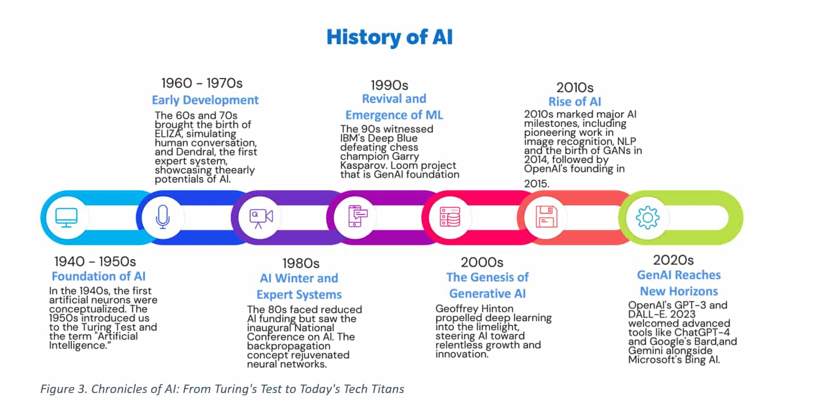
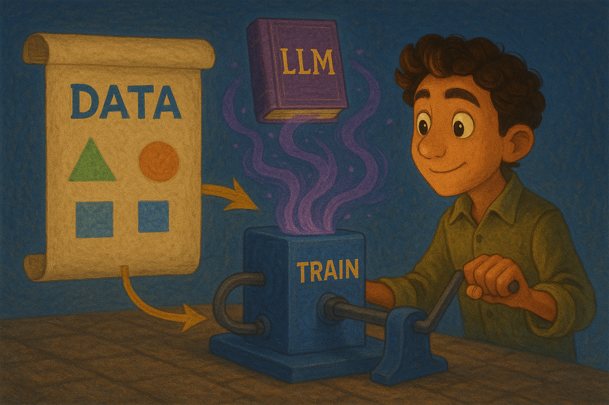

AI
Inspiration session
Íslandsútgáfan
Concerning Magic...
Pleased to meet you!
- Tech Lead - Akkuro Lending
- A.I. Document Extraction
- A.I. evangelist
- Kosdapapa Piggybank app

- Prompt engineering @ topiconf
- Kosdapapa Piggybank app
Today's Journey
- Large Language Models - Understanding the magic behind AI
- AI in Way of Working - Transforming how we collaborate
- AI in Applications - Real-world AI implementations
- Prompt Engineering - The art of talking to AI
- Some Tips and Q&A - Some tips and questions and insights
Large Language Models
What is an LLM?
- Traditional AI: Data → Label → Train → Predict
- Example: Risk model for company defaults
- LLMs: A specific type of model...

Based on Probability

Capabilities
LLMs excel where both the input and output are words, and the rules are fuzzy.
- Text generation and completion
- Language translation
- Code generation and debugging
- Question answering and reasoning
- Creative writing and content creation
- Data analysis and summarization
Limitations
LLMs struggle with precision, real-time data, and tasks requiring exact logic.
- Hallucinations - making up facts confidently
- Mathematical calculations and precise logic
- No access to real-time information
- Consistent personality or memory across sessions
- Understanding of physical world constraints
- Inability to learn from individual conversations
AI in Way of Working
How AI is changing the way we work and collaborate.
- Responsible AI - What can we use? And why?
- Thousands of AI tools launched daily
- Key question: Where is my data going?
- 2 kinds of data you should keep in mind
- GDPR and Personal Identifiable Information
- Proprietary data protection
Public vs. Private Models

WoW Examples
Tools, Tools, Tools...
AI in Applications
Incorporating AI Responsibly
- Customer data is not ours to share publicly
- Data often contains PII (Personal Identifiable Information)
- Public models not suitable for most use cases
- Our preferred solution: Serviced models
- Example: GPT on Azure Foundry
- Alternative: Local deployment
Applications of AI, What Can It Do?
Architectures and Solutions
How to build AI into your applications
Cost
Pay per Token: Smallest unit of information a model processes
- AI uses compute - costs based on operations performed
- Token = small word or part of a word
- Larger models = more compute = higher cost
- Multi-modality complexity (images = tiles after size reduction)
- THIS GETS REALLY COMPLEX, QUICKLY
- Best approach: Try, measure tokens, calculate
Prompt Structure
Role
Instruction
Context
Constraints & Guidelines
Output Format
Poorly written prompt
Explain how I can improve the performance of my application when retrieving information from the database.
Prompting Patterns
Show examples instead of explaining rules
Makes thinking process visible for complex problems
Like a consultant gathering requirements
Prompts in your application
🤖 Prompts = 💻 Code
- 📋 Version Control - Track changes with source control
- 🏷️ Versioning - Version prompts across releases
- ✅ Testing - Add automated tests for prompts
- 🔄 Evaluation - Automate prompt output evaluation
Defensive Prompting
Risks
Three main types of prompt attacks to defend against:
-
Prompt Extraction
Extracting the application's system prompt to replicate or exploit -
Jailbreaking & Prompt Injection
Getting the model to perform harmful or unintended actions -
Information Extraction
Getting the model to reveal training data or context information
Possible Consequences
-
Remote Code or Tool Execution
Unauthorized execution of code or system tools -
Data Leaks
Extraction of private system and user information -
Social Harms
Providing knowledge for dangerous or criminal activities -
Misinformation
Manipulation of model outputs to spread false information -
Service Interruption and Subversion
Unauthorized access, incorrect decisions, or service disruption -
Brand Risk
Toxic or inappropriate statements causing PR crises
Hackathon Mindset
Don't let practical limitations limit your creativity!
🚫 Don't worry about:
- GDPR & regulations
- Perfect security
- Scalability
✅ Focus on:
- Does it solve a real problem?
- Is the idea compelling?
- What works, what doesn't?
🚀 Goal: Discover, explore, learn!
Tips for non-devs
🛠️ Rapid Prototyping
- Lovable.dev
AI-powered app builder - describe your app, get working code - Claude Artifacts
Create interactive demos and prototypes through conversation - Figma + AI plugins
Design interfaces with AI assistance - Bubble.io
No-code platform with AI integrations
🔍 Research & Analysis
- NotebookLM
Research synthesis and document analysis - Perplexity
Market research and competitive analysis - ChatGPT/Claude
User interviews, persona creation, survey analysis - Notion AI
Project documentation and planning
Content & Presentation
🎨 Visual Content
- DALL-E / Midjourney
Generate mockup visuals, icons, and concept art - Figma + AI plugins
AI-assisted interface design and wireframing - Canva AI
Quick marketing materials and graphics - Runway / Synthesia
Demo videos and AI-generated presentations
📝 Written Content
- ChatGPT / Claude
Pitch decks, business cases, user stories - Gamma / Beautiful.AI
AI-generated presentation design - Jasper / Copy.ai
Marketing copy and product descriptions - Grammarly
Polish and improve written content
Tips for Devs
🎯 START SIMPLE
Prompt → API → Response
🚀 Quick Start Tools
- Public or private APIs
- Streamlit / Gradio
- GitHub Copilot
⚡ Further exploration
- Self hosting - MLOPS
- Function Calling
- Vector DBs for RAG
- Protocols
- Agentic architectures